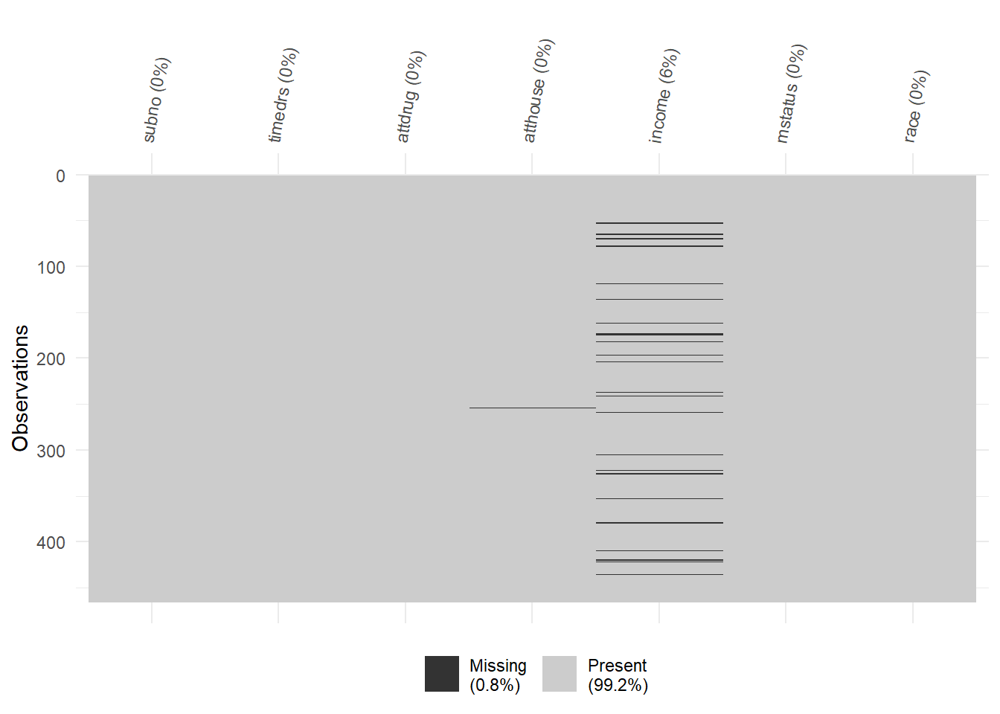
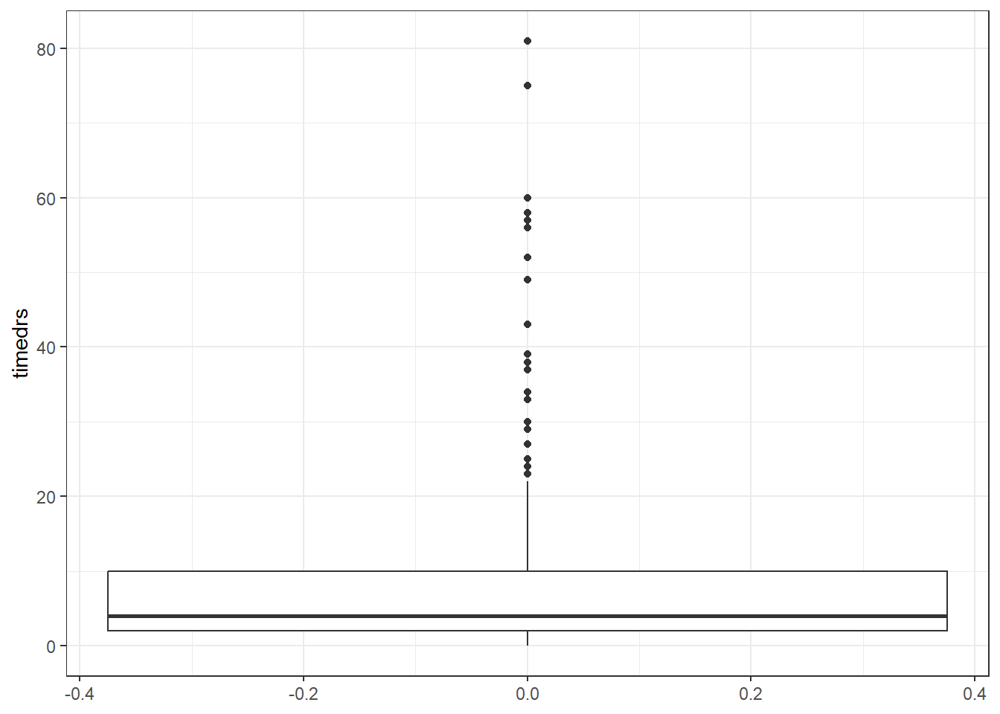
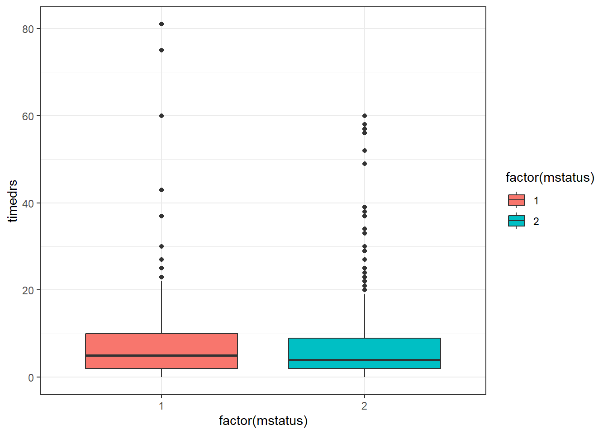

Ders Hakkında
Bu dersin amacı, R yazılımını kullanarak veri üzerinde istenilen çok değişkenli istatistiksel ve psikometrik işlemlerin yapılabilmesini sağlamaktır.
Tez ve makale çalışmalarında öğrencilerimizin analizlerini R yazılımı ile hiçbir paket programa ihtiyaç duymadan kendi başlarına yapmalarını sağlamaktır.
Ders İçeriği:
- Çok değişkenli İstatistik Varsayımları
- Çoklu Regresyon
- Yol Analizi
- Açımlayıcı Faktör Analizi
- Doğrulayıcı Faktör Analizi
- Progralamaya Giriş
- Klasik Test Kuramı
- Madde Tepki Kuramı
- Veri Üretimi
Kitaplar
Atar, B., Atalay Kabasakal, K, Unsal Ozberk, E. B., Ozberk, E. H. & Kibrislioglu Uysal, N. (2020). R ile Veri Analizi ve Psikometri Uygulamaları, Pegem Akademi, Ankara.🔗 📖
Desjardins, C. D., & Bulut, O. (2018). Handbook of educational measurement and psychometrics using R. Boca Raton, FL: CRC Press. 🔗📖
Demir, E. R Diliyle İstatistik Uygulamaları. Pegem Akademi, Ankara.(2021). 🔗📖
Kline,R. B. (2019). Yapısal Eşitlik Modellemesinin İlkeleri ve Uygulaması(4. Baskı). (S. Şen, Çev.) Ankara: Nobel Yayınevi.
Şen, S. (2020). Mplus ile Yapısal Eşitlik Modellemesi Uygulamaları (2020).Nobel Yayınevi.
Tabachnick, B. G., & Fidell, L. S. (2012). Using Multivariate Statistics (4rd ed.). New York: Harper Collins.
Wolf, E. J., Harrington, K. M., Clark, S. L., & Miller, M. W. (2013). Sample Size Requirements for Structural Equation Models: An Evaluation of Power, Bias, and Solution Propriety. Educational and Psychological Measurement, 73(6), 913–934. https://doi.org/10.1177/0013164413495237
1 Varsayımlar I
Veri Dosyasındaki Verinin Doğruluğu
Kayıp Verinin Miktarı ve Dağılımı
Tek Değişkenli ve Çok Değişkenli Uç Değerler (Outliers)
Sayıltılar
Çoklu Bağlantı (Multicollinearity) ve Tekillik (Singularity)
1.1 Veri İnceleme
Varsayımlar incelenirken ilk olarak yanlış girilmiş bir değer olup olmadığına bakılmalıdır.
Bu bölümde 🔗 SCREEN.SAV adlı veri seti kullanılmıştır. Bu veri setinde 20-59 yaşları arasında 465 kadının 6 değişkene ilişkin bilgileri bulunmaktadır. Değişkenlerden timedrs, attdrug, atthouse ve income değişkenleri sürekli, mstatus ve race değişkenleriyse iki kategorili değişkenlerdir. Bu veri seti Tabachnick, B. G., & Fidell, L. S. (2012). Using Multivariate Statistics (4rd ed.). New York: Harper Collins. kitabının 4. bölümünde kullanılmaktadır.
Veri incelemede birden fazla paket kullanılabilir. En temel fonksiyon
basepaketinsummary()fonksiyonudur.psychpaketindedescribe()fonksiyonu da aynı amaçla kullanılabilir.
| subno | timedrs | attdrug | atthouse | income | mstatus | race |
|---|---|---|---|---|---|---|
| 1 | 1 | 8 | 27 | 5 | 2 | 1 |
| 2 | 3 | 7 | 20 | 6 | 2 | 1 |
| 3 | 0 | 8 | 23 | 3 | 2 | 1 |
| 4 | 13 | 9 | 28 | 8 | 2 | 1 |
| 5 | 15 | 7 | 24 | 1 | 2 | 1 |
| 6 | 3 | 8 | 25 | 4 | 2 | 1 |
- Veri setindeki maksimum ve minumum değerleri belirlenmiştir.
## subno timedrs attdrug atthouse
## Min. : 1.0 Min. : 0.000 Min. : 5.000 Min. : 2.00
## 1st Qu.:137.0 1st Qu.: 2.000 1st Qu.: 7.000 1st Qu.:21.00
## Median :314.0 Median : 4.000 Median : 8.000 Median :24.00
## Mean :317.4 Mean : 7.901 Mean : 7.686 Mean :23.54
## 3rd Qu.:483.0 3rd Qu.:10.000 3rd Qu.: 9.000 3rd Qu.:27.00
## Max. :758.0 Max. :81.000 Max. :10.000 Max. :35.00
## NA's :1
## income mstatus race
## Min. : 1.00 Min. :1.000 Min. :1.000
## 1st Qu.: 2.50 1st Qu.:2.000 1st Qu.:1.000
## Median : 4.00 Median :2.000 Median :1.000
## Mean : 4.21 Mean :1.778 Mean :1.088
## 3rd Qu.: 6.00 3rd Qu.:2.000 3rd Qu.:1.000
## Max. :10.00 Max. :2.000 Max. :2.000
## NA's :26- Elde edilen değerlerin makul olduğu söylenebilir. Ancak bunu elde
etmek için başka yollar da bulunmaktadır.
psychpaketi ile inceleme daha ayrıntılı yapılabilir.
##
## Attaching package: 'psych'## The following objects are masked from 'package:ggplot2':
##
## %+%, alpha| vars | n | mean | sd | median | trimmed | mad | min | max | range | skew | kurtosis | se | |
|---|---|---|---|---|---|---|---|---|---|---|---|---|---|
| timedrs | 1 | 465 | 7.90 | 10.95 | 4 | 5.61 | 4.45 | 0 | 81 | 81 | 3.23 | 12.88 | 0.51 |
| attdrug | 2 | 465 | 7.69 | 1.16 | 8 | 7.71 | 1.48 | 5 | 10 | 5 | -0.12 | -0.47 | 0.05 |
| atthouse | 3 | 464 | 23.54 | 4.48 | 24 | 23.62 | 4.45 | 2 | 35 | 33 | -0.45 | 1.51 | 0.21 |
| income | 4 | 439 | 4.21 | 2.42 | 4 | 4.01 | 2.97 | 1 | 10 | 9 | 0.58 | -0.38 | 0.12 |
| mstatus | 5 | 465 | 1.78 | 0.42 | 2 | 1.85 | 0.00 | 1 | 2 | 1 | -1.34 | -0.21 | 0.02 |
| race | 6 | 465 | 1.09 | 0.28 | 1 | 1.00 | 0.00 | 1 | 2 | 1 | 2.90 | 6.40 | 0.01 |
🔗 personality-project sayfasını daha fazla örnek için inceleyebilirsiniz.
gtsummarypaketi ile inceleme
library(gtsummary)
screen %>% select(2:6) %>%tbl_summary(statistic = all_continuous() ~ c(
"{min}, {max}"),missing ="always")| Characteristic | N = 4651 |
|---|---|
| Visits to health professionals | 0, 81 |
| Â Â Â Â Unknown | 0 |
| Attitudes toward medication | |
| Â Â Â Â 5 | 13 (2.8%) |
| Â Â Â Â 6 | 60 (13%) |
| Â Â Â Â 7 | 126 (27%) |
| Â Â Â Â 8 | 149 (32%) |
| Â Â Â Â 9 | 95 (20%) |
| Â Â Â Â 10 | 22 (4.7%) |
| Â Â Â Â Unknown | 0 |
| Attitudes toward housework | 2.0, 35.0 |
| Â Â Â Â Unknown | 1 |
| Income | 1.00, 10.00 |
| Â Â Â Â Unknown | 26 |
| Whether currently married | |
| Â Â Â Â 1 | 103 (22%) |
| Â Â Â Â 2 | 362 (78%) |
| Â Â Â Â Unknown | 0 |
| 1 Range; n (%) | |
🔗[Presentation-Ready Summary Tables] with gtsummary(https://education.rstudio.com/blog/2020/07/gtsummary)
vtablepaketi ile inceleme
| Variable | NotNA | Min | Max |
|---|---|---|---|
| subno | 465 | 1 | 758 |
| timedrs | 465 | 0 | 81 |
| attdrug | 465 | 5 | 10 |
| atthouse | 464 | 2 | 35 |
| income | 439 | 1 | 10 |
| mstatus | 465 | 1 | 2 |
| race | 465 | 1 | 2 |
sütun isimleri aşağıdaki gibi değiştirilebilir.
sumtable(screen, summ = c('notNA(x)','min(x)','max(x)'),
summ.names = c('Frekans'
,'Minimum','Maksimum'))| Variable | Frekans | Minimum | Maksimum |
|---|---|---|---|
| subno | 465 | 1 | 758 |
| timedrs | 465 | 0 | 81 |
| attdrug | 465 | 5 | 10 |
| atthouse | 464 | 2 | 35 |
| income | 439 | 1 | 10 |
| mstatus | 465 | 1 | 2 |
| race | 465 | 1 | 2 |
kablepaketi ilepsychpaketi çıktılarını düzenleme
ozet <- describe(screen[,-1])
kable(ozet,format='markdown',
caption="Betimsel İstatistikler",digits=2)| vars | n | mean | sd | median | trimmed | mad | min | max | range | skew | kurtosis | se | |
|---|---|---|---|---|---|---|---|---|---|---|---|---|---|
| timedrs | 1 | 465 | 7.90 | 10.95 | 4 | 5.61 | 4.45 | 0 | 81 | 81 | 3.23 | 12.88 | 0.51 |
| attdrug | 2 | 465 | 7.69 | 1.16 | 8 | 7.71 | 1.48 | 5 | 10 | 5 | -0.12 | -0.47 | 0.05 |
| atthouse | 3 | 464 | 23.54 | 4.48 | 24 | 23.62 | 4.45 | 2 | 35 | 33 | -0.45 | 1.51 | 0.21 |
| income | 4 | 439 | 4.21 | 2.42 | 4 | 4.01 | 2.97 | 1 | 10 | 9 | 0.58 | -0.38 | 0.12 |
| mstatus | 5 | 465 | 1.78 | 0.42 | 2 | 1.85 | 0.00 | 1 | 2 | 1 | -1.34 | -0.21 | 0.02 |
| race | 6 | 465 | 1.09 | 0.28 | 1 | 1.00 | 0.00 | 1 | 2 | 1 | 2.90 | 6.40 | 0.01 |
- 🔗 rmarkdown-cookbook
1.2 Kayıp Değerler
Kayıp veri, veri analizindeki en yaygın problemlerden biridir.
Kayıp verinin önemi kayıp verinin miktarına, örüntüsüne ve neden eksik olduğuna bağlıdır.
Bir değişkene ait beklenmeyen miktarda kayıp veri varsa, ilk olarak bunun nedeni araştırılmalıdır. Daha sonra kayıp verinin örüntüsüne bakılarak, rastlantısal mı yoksa sistematik bir örüntü mü gösterdiği belirlenmelidir.
- Örneğin, 30 yaşın üstündeki birçok kadın yaş ile ilgili soruyu cevaplamak istemezler.
Genellikle kayıp verinin örüntüsü miktarından daha önemlidir. Rastlantısal dağılmayan kayıp veriler sonuçların genellenebilirliğini etkileyeceğinden miktarları az da olsa, rastlantısal dağılan kayıp verilere oranla daha ciddi problemlere yol açarlar.
1.2.1 Kayıp Veri Türleri
Kayıp veri türleri arasındaki ayrım 1976 yılında Rubin tarafından yapılmıştır. Rubin (1976) kayıp veriyi aşağıdaki şekilde sınıflandırmıştır.
Tamamen Rastgele Olarak Kayıp (TRK) - Missing Completely at Random MCAR
Rastgele Kayıp (RK) - Missing at Random (MAR)
Rastgele Olmayan Kayıp / İhmal Edilemez Kayıp (ROK) - Not Missing at Random (NMAR)
Kayıp veri en azından MAR türünde değilse, kayıp verinin ihmal edilemeyeceği söylenir. Bu türdeki kayıp veri rastlantısal olamyan kayıp veya ihmal edilemez kayıp olarak adlandırılır.
Büyük bir veri setinde, verinin %5’i veya daha azı rastlantısal olarak kayıpsa çok ciddi problemlerle karşılaşılmaz ve kayıp veri ile ilgili problemleri çözmek için kullanılan herhangi bir yöntem benzer sonuçlar verir. Halbuki küçük veya orta büyüklükteki bir veri setinde çok sayıda veri kaybı varsa ciddi problemler ortaya çıkabilir.
Eldeki bilgiden yararlanarak kayıp verideki örüntüler test edilebilir.
1.2.2 TRK
Bir Y değişkeninde kayıp veri bulunma olasılığının, Y değişkeninin kendi değerleriyle ve veri setindeki diğer değişkenlerin değerleriyle ilişkisiz olması durumunda Y değişkenindeki verinin tamamen rastgele kayıp (TRK) olduğu söylenir (Allison, 2002).
Örneğin; bir ilkokulda okuma başarısı üzerine yürütülen bir boylamsal araştırmada çocuklar hastalık ya da ailede ölüm gibi tesadüfi bir sebepten değerlendirmeye katılmadığında veri TRK olarak adlandırılır. Ayrıca bu faktörlerin sosyoekonomik düzey gibi ölçülen diğer değişkenle ilişkisi olmadığı varsayıldığında, araştırmacı tarafından elde edilen veriler hipotetik bir tam veri setinin rastgele bir örneklemini temsil eder (Peugh ve Enders, 2004).
1.2.3 Rastgele kayıp (RK)
Bir Y değişkenindeki kayıp veri bulunma olasılığının, analiz modelindeki diğer değişkenlerin bazılarıyla ilişkili olduğunu ancak Y değişkeninin kendi değerleriyle ilişkili olmadığını ifade eder.
Örneğin, kanser hastalarıyla yaşam kalitesi üzerine çalışma yapan bir psikologun yaşlı ve eğitim düzeyi düşük hastaların yaşam kalitesi anketini reddetme eğiliminin daha yüksek olduğu sonucuna ulaştığını düşünelim. Bu durumda kayıp veriye eğilimin, kayıp veri bulunan değişkenle arasında artık ilişki yoksa verinin RK olduğu söylenir. Başka bir ifadeyle, RK yaş ve eğitim kontrol edildiğinde kayıp veri olasılığının yaşam kalitesiyle arasında ilişki olmaması durumudur (Enders, 2010). Kayıp veri olasılığı yalnızca diğer gözlenen değişkenlerin değerlerine bağlı olduğunda veri RK’dır (Robitzsch ve Rupp, 2009).
RK türünde veri gerçekte rastlantısal olarak kayıp değildir, veri kaybı veri setindeki değişkenlerden bazılarına bağlıdır. Rastlantısal olarak kayıp değerler ve gözlenen değerler arasında sistematik farklılıkların olabileceği ancak bu farklılıkların diğer gözlenen değişkenlerle tamamen açıklanabileceği anlamındadır.
Bir değişkenin gözlemleri rastlantısal olarak kayıpsa, şartlı değişkenler kontrol edilebilirse , rastlantısal küme elde edilebilir; kayıp ve gözlenen değerler kontrol altına alınan gruplarda benzer dağılımlara sahip olacaklardır.
Örneğin, kayıp verinin bulunduğu değişkene göre eksik değerlere sahip bireyler ve tam değerlere sahip bireylerden iki grup oluşturulabilir. Sonra analizde bu değişkenle ilgili olabilecek diğer değişkenlerde t testi ile iki grup arasındaki ortalama farklara bakılabilir.
1.2.4 Rastgele Olmayan Kayıp
- Rastgele olmayan kayıp (ROK), bir Y değişkenindeki kayıp veri bulunma olasılığının diğer değişkenler kontrol edildiğinde bile Y değişkeninin değerleriyle ilişkili olması durumunda meydana gelir. Örneğin, okuma becerileri zayıf olan öğrencilerin okuma testinde anlama güçlüğü çekerek soruları atlaması kaçınılmaz olacaktır. Bu durumda okuma değerlendirmesi okuma başarısıyla doğrudan ilişkilidir (Enders, 2010; Peugh ve Enders, 2004).
1.3 Kayıp Veri Atama Yöntemleri
Kayıp veriyle baş etme yöntemleri
veri silmeye dayalı yöntemler (liste baznda - çiftler bazında)
Veri atamaya dayalı yöntemler
Model tabanlı yöntemler
Veri silmeye dayalı yöntemler TRK veri mekanizmasını gerektirmektedir ve bu varsayım sağlanmadığında yanlış parametre kestirimleri verebilir. MCAR varsayımı sağlandığında bile verinin silinmesi analizin gücünün düşmesine neden olabilmektedir (Enders, 2010).
1.3.1 Veri Silmeye Dayalı Yöntemler
| Gözlem | Y1 | Y2 | Y3 |
|---|---|---|---|
| 1 | 13 | 23 | 21 |
| 2 | 14 | 22 | 17 |
| 3 | 15 | - | 11 |
| 4 | 16 | 18 | - |
| 5 | 17 | 17 | 12 |
| 6 | - | 20 | 8 |
| 7 | - | 20 | 15 |
Liste bazında veri silme yöntemi uygulandığında veri kümesinde sadece birinci, ikinci ve beşinci gözlemler üzerinden istatistiksel çözümlemeler yapılacaktır. Üçüncü, dördüncü, altıncı ve yedinci gözlemler kayıp veri bulundurduklarından çözümleme dışında bırakılmıştır.
çiftler bazında veri silme ile ele alındığında birinci ve ikinci değişken için birinci, ikinci, dördüncü ve beşinci gözlemler üzerinden işlem yapılacaktır. Birinci ve üçüncü değişken için yapılacak kestirimler, birinci, ikinci, üçüncü ve beşinci gözlemler üzerinden yapılacaktır. İkinci ve üçüncü değişkenler baz alındığında ise üçüncü ve dördüncü gözlem hariç diğer gözlemler üzerinden çözümlemeler yapılacaktır. Yapılan işlemler dikkate alındığında ilk altküme için dört gözlem çifti, ikinci altküme için dört gözlem çifti ve üçüncü altküme için beş gözlem çifti üzerinden çözümlemeler yapılarak birleştirilecektir. Görüldüğü gibi altkümelerin gözlem sayıları birbirlerinden farklı olabilmektedir. Liste bazında veri silme yönteminde gözlenmesine rağmen çözümleme dışında kalan değerlerden oluşan bilgi kaybı, çiftler bazında veri silme yöntemi ile azaltılmıştır. Her değişkenin farklı örneklem sayısı bulundurmasının ANOVA ve regresyon çözümlemesi gibi yöntemlerin kullanılacağı durumlarda problemli olduğunu belirtilmiştir.
1.3.2 Veri atamaya dayalı yöntemler
- Ortalama veri atama
- Regresyon İle veri atama
- Deck/Deste ile Veri Yükleme
- En Yakın Komşu Yöntemi
- Son Gözlemi İleri Taşıma
1.3.3 Model tabanlı yöntemler
Gözlenmiş değerler üzerinden kurulan bir modelde olabilirlik ve sonsal dağılımlara bağlı olarak parametrelerin kestirilmesine dayanan kayıp veri yöntemleridir. Bu yöntemlerin en önemli getirisi esneklikleridir. Geçici yöntemlerden kaçınarak model varsayımları altında çözümleme yaparlar. Ayrıca veri matrisinde gözlenememiş değerleri de hesaba katarak varyans kestirimleri verirler.
ML Yöntemi
EM Algoritması
Çoklu Veri Atama
1.3.4 Kayıp Veri Analizinde Kullanılan Paketler
- Kayıp veriyi incelemek ve kayıp veri ile baş etmek konusunda birden
fazla paket mevcuttur. Bu paketler arasında
- VIM
- missMethods
- Amelia
- naniar paketi sayılabilir.
İlk örnekler naniar üzerinden gösterilmektedir.
- herhangi bir eksik veri olup olmadığının kontrolü
## [1] TRUE- toplam kaç eksik veri var
## [1] 27- eksik veri oranı ne?
## [1] 0.008294931- eksik veriler hangi sütunlarda
## subno timedrs attdrug atthouse income mstatus race
## 0 0 0 1 26 0 0- eksik veri tablosu, frekans ve oran
| variable | n_miss | pct_miss |
|---|---|---|
| income | 26 | 5.5913978 |
| atthouse | 1 | 0.2150538 |
| subno | 0 | 0.0000000 |
| timedrs | 0 | 0.0000000 |
| attdrug | 0 | 0.0000000 |
| mstatus | 0 | 0.0000000 |
| race | 0 | 0.0000000 |
- değişkenlere göre eksik veri tablosu
| n_miss_in_var | n_vars | pct_vars |
|---|---|---|
| 0 | 5 | 71.42857 |
| 1 | 1 | 14.28571 |
| 26 | 1 | 14.28571 |
- Hangi bireylerde/satırlarda eksik veri var
| case | n_miss | pct_miss |
|---|---|---|
| 52 | 1 | 14.28571 |
| 64 | 1 | 14.28571 |
| 69 | 1 | 14.28571 |
| 77 | 1 | 14.28571 |
| 118 | 1 | 14.28571 |
| 135 | 1 | 14.28571 |
- tam ve eksik veri tablosu
| n_miss_in_case | n_cases | pct_cases |
|---|---|---|
| 0 | 438 | 94.193548 |
| 1 | 27 | 5.806452 |
- Eksik verinin görselleştirilmesi

- Eksik verinin görselleştirilmesi

## `geom_line()`: Each group consists of only one observation.
## ℹ Do you need to adjust the group aesthetic?
1.3.5 Kayıp Veri Testi
Veri kaybının diğer değişkenlerle ilişkili olup olmadığının incelenmesi
finalfit paketi ile gerçekleştirilebilir.
- income değişleninde eksik veriler diğer değişkenlerle ilişkili mi?
# değişkeni kopyala
screen2 <- screen
screen2$income_m <- screen2$income
library(finalfit)
explanatory = c("timedrs", "attdrug", "atthouse")
dependent = "income_m"
screen2 %>%
missing_compare(dependent, explanatory) %>%
knitr::kable(row.names=FALSE, align = c("l", "l", "r", "r", "r"),
caption = "Eksik veriye sahip olan ve olmayan değişkenlerin ortalama karşılaştırması") | Missing data analysis: Income | Not missing | Missing | p | |
|---|---|---|---|---|
| Visits to health professionals | Mean (SD) | 7.9 (11.1) | 7.6 (7.4) | 0.891 |
| Attitudes toward medication | Mean (SD) | 7.7 (1.2) | 7.9 (1.0) | 0.368 |
| Attitudes toward housework | Mean (SD) | 23.5 (4.5) | 23.7 (4.2) | 0.860 |
1.3.5.1 Bir değişkenin kategorilerinde inceleme
library(tidyverse)
miss_test <- screen2 %>%mutate(miss_income = is.na(income))
# evli olmayanlar için
notmarried <- miss_test %>% filter(mstatus == 1) %>%
pull(miss_income)
# Evliler için
married <- miss_test %>% filter(mstatus == 2) %>% pull(miss_income)
#c Oran
t.test(notmarried, married)##
## Welch Two Sample t-test
##
## data: notmarried and married
## t = -0.95833, df = 198.7, p-value = 0.3391
## alternative hypothesis: true difference in means is not equal to 0
## 95 percent confidence interval:
## -0.06708191 0.02320485
## sample estimates:
## mean of x mean of y
## 0.03883495 0.06077348
1.3.6 MCAR test
| statistic | df | p.value | missing.patterns |
|---|---|---|---|
| 3.286262 | 6 | 0.7721547 | 3 |
- Littleın MCAR testine ilişkin p değerinin . 773 olduğu görülmektedir. Böylece kayıp verinin MCAR olduğu sonucuna varılabilir.
1.3.7 Kayıp veri ile başetme
- Liste bazında silme işlemi na.omit ve complete.cases fonkisyonları ile sağlanabilir.
- Ortalama atama işlemi yapılabir. Tek bir değişkene ortalama atama
- if_else() ile ortalama atama işlemi yapılabir.
screen3 <- screen
screen3 = transform(screen3, income = ifelse(is.na(income),
mean(income, na.rm=TRUE), income))
summary(screen3$income)## Min. 1st Qu. Median Mean 3rd Qu. Max.
## 1.00 3.00 4.00 4.21 6.00 10.00mutate()ile ortalama atama işlemi yapılabilir
1.3.8 Veri setindeki kayıp veriler
atthouse değişkeninde bir kayıp değer bulunmaktadır ve liste bazında silme yöntemi ile veri setinden çıkarılmıştır.
Veri setinde income değişkeni 26 kayıp değere sahiptir ve bu sayı örneklemin %5’inden fazladır. Eğer bu değişken araştırma açısından öneme sahip değilse, veri setinden çıkarılabilir, aksi halde kayıp verinin tahmin edilmesi yöntemlerinden biri kullanılabilir.
income değişkenindeki kayıp değerler için kayıp verinin tahmin edilmesi yöntemlerinden ortalamanın yerleştirilmesi kullanılarak kayıp değer yerine değişkenin ortalama değeri (4.21 değeri) yerleştirilmiştir.
screen <- screen %>%
mutate(income = ifelse(is.na(income), mean(income, na.rm =TRUE),
income)) %>% na.omit()
summary(screen)## subno timedrs attdrug atthouse
## Min. : 1.0 Min. : 0.000 Min. : 5.00 Min. : 2.00
## 1st Qu.:136.8 1st Qu.: 2.000 1st Qu.: 7.00 1st Qu.:21.00
## Median :313.5 Median : 4.000 Median : 8.00 Median :24.00
## Mean :317.3 Mean : 7.914 Mean : 7.69 Mean :23.54
## 3rd Qu.:483.2 3rd Qu.:10.000 3rd Qu.: 9.00 3rd Qu.:27.00
## Max. :758.0 Max. :81.000 Max. :10.00 Max. :35.00
## income mstatus race
## Min. : 1.000 Min. :1.00 Min. :1.000
## 1st Qu.: 3.000 1st Qu.:2.00 1st Qu.:1.000
## Median : 4.000 Median :2.00 Median :1.000
## Mean : 4.208 Mean :1.78 Mean :1.086
## 3rd Qu.: 6.000 3rd Qu.:2.00 3rd Qu.:1.000
## Max. :10.000 Max. :2.00 Max. :2.000- daha fazla bilgi için https://bookdown.org/mwheymans/bookmi/missing-data-evaluation.html
1.4 Daha Fazlası için
Stef van Buuren "Flexible Imputation of Missing Data" kitabına linkten erişebilirsiniz.
1.5 Kaynaklar
Allison, P. D. (2003). Missing Data Techniques for Structural Equation Modeling. Journal of Abnormal Psychology. 112(4), 545-557.
Peugh, J.L. & Enders, J.K. (2004). Missing Data in Educational Research: A Review of Reporting Practices and Suggestions for İmprovement. Review of EducationalResearch, 74(4), 525-556, DOI: 10.3102/00346543074004525 Peugh ve Enders, 2004
Rubin, D. B. (1976). Inference with missing data. Biometrika , 63, 581
- Robitzsch ve Rupp, 2009
2 Varsayımlar II
2.1 Uç değerler
Uç değerler hem I. tip hem de II. tip hatalara neden olurlar ve sonuçların genellenebilirliğini düşürürler.
Veri setinde uç değer bulunmasının 4 nedeni olabilir:
- Verinin veri dosyasına yanlış girilmesi
- Kayıp veri kodlamasında hata yapılması
- Uç değerin örneklemin alındığı evrenin üyesi olmaması
- Uç değerin örneklemin alındığı evrenin üyesi olması ancak değişkenin evrendeki dağılımının normal dağılıma göre aşırı değerlere sahip olması
Hatalı veri girişi ve kayıp değer kodlaması kolaylıkla bulunup düzeltilebilir ancak 3. ve 4. durumlar arasında ayrım yapıp uç değerin veri setinden silinip silinmemesine karar vermek oldukça güçtür.
Tek değişkenli uç değerlerin belirlenmesi çok değişkenli uç değerlerin belirlenmesine göre daha kolaydır.
İki kategorili değişkenler için, eşit büyüklükte olmayan kategorilerde yanlış kategoride gözlenen bir değer olasılıkla uç değerdir. Rummel (1970) iki kategorili bir değişken için kategorilerden biri örneklemdeki bireylerin %90’ını diğeri ise %10’unu içeriyorsa, değişkenin analiz dışı bırakılmasını önermektedir.
2.1.1 İki kategorili değişkenlerde uç değerlerin Belirlenmesi
summarytools paketinde
freq()fonksiyonu ile frekans tabloları oluşturulabilir.Veri setinde yer alan mstatus ve race değişkenlerinin frekans tabloları incelenmiştir.
İlk olarak eksik veri düzenlenmesi
library(haven)
screen <- read_sav("import/SCREEN.sav")
screen <- screen %>%
mutate(income = ifelse(is.na(income), mean(income, na.rm =TRUE),
income)) %>% na.omit()- race değişkenin frkans tablosu
##
## Attaching package: 'summarytools'## The following object is masked from 'package:tibble':
##
## view## ### Frequencies
## #### screen$race
## **Label:** Ethnic group membership
## **Type:** Numeric
##
## | | Freq | % | % Cum. |
## |----------:|-----:|-------:|-------:|
## | **1** | 424 | 91.38 | 91.38 |
## | **2** | 40 | 8.62 | 100.00 |
## | **Total** | 464 | 100.00 | 100.00 |İki kategorili değişkenlerden race değişkeninin kategorilere dağılımları incelendiğinde kategoriler arasında yaklaşık 10.1:1 (91/9) oranı olduğu görülmektedir. Bu oran oldukça yüksektir. Değişken araştırma için önemli değilse çıkarılabilir, aksi halde değişkenle ilgili sonuçlar yorumlanırken bu durum göz önüne alınmalıdır.
mstatus değişkenin frkans tablosu oluşturulurken kable fonksiyonu ile tablolaştırılmıştır.
library(knitr)
freq(screen$mstatus, plain.ascii = FALSE,report.nas = FALSE) %>%
kable(format='markdown',
caption="Frekans Tablosu",digits = 2)| Freq | % Valid | % Valid Cum. | % Total | % Total Cum. | |
|---|---|---|---|---|---|
| 1 | 102 | 21.98 | 21.98 | 21.98 | 21.98 |
| 2 | 362 | 78.02 | 100.00 | 78.02 | 100.00 |
| 0 | NA | NA | 0.00 | 100.00 | |
| Total | 464 | 100.00 | 100.00 | 100.00 | 100.00 |
İki kategorili değişkenlerden mstatus değişkeninin kategorilere dağılımları incelendiğinde kategoriler arasında yaklaşık 3.5:1 (78/22) oranı olduğu görülmektedir. Bu oran kabul edilebilir bir orandır.
🔗 [summarytools için] (https://cran.r-project.org/web/packages/summarytools/vignettes/introduction.html)
2.1.2 Sürekli değişkenlerde uç değerlerin Belirlenmesi
Sürekli değişkenler için tek değişkenli uç değerleri belirlemenin bir yolu, değişkene ait bütün değerlerin ortalama 0, standart sapma 1 olacak şekilde standart değerlere (z puanlarına) dönüştürülmesidir. Tek değişkenli uç değerler çok büyük z puanlarına sahiptirler.
Örneklem büyüklüğü 100 veya daha az olduğunda, eğer herhangi bir gözlemin z puanı ±3.0 veya daha fazlaysa, gözlem uç değerdir.
Örneklem büyüklüğü 100’den fazla olduğunda, eğer herhangi bir gözlemin z puanı ±4.0 veya daha fazlaysa, gözlem uç değerdir.
Bu yöntem eşit aralık veya eşit oran düzeyinde ölçülen değişkenler için veya sürekli değişken olarak ele alınan sıralama ölçeğinde ölçülen değişkenler için geçerli olup sınıflama düzeyinde ölçülen değişkenler için geçerli değildir.
outliers paketinde
select()fonksiyonu ile z değerleri hesaplanabilir.
library(outliers)
z.scores <- screen %>%
select(2:5) %>%
scores(type = "z") %>%
round(2)
head(z.scores)| timedrs | attdrug | atthouse | income |
|---|---|---|---|
| -0.63 | 0.27 | 0.77 | 0.34 |
| -0.45 | -0.60 | -0.79 | 0.76 |
| -0.72 | 0.27 | -0.12 | -0.51 |
| 0.46 | 1.13 | 0.99 | 1.61 |
| 0.65 | -0.60 | 0.10 | -1.36 |
| -0.45 | 0.27 | 0.33 | -0.09 |
- outliers paketinde
descr()fonksiyonu ile z değerlerinin minumum ve maksimum değerleri incelenebilir.
summarytools::descr(z.scores,
stats = c("min", "max"),
transpose = TRUE,
headings = FALSE) %>%
kable()| Min | Max | |
|---|---|---|
| attdrug | -2.33 | 2.00 |
| atthouse | -4.80 | 2.56 |
| income | -1.36 | 2.46 |
| timedrs | -0.72 | 6.67 |
- timedrs değişkeni için z puanlarının maksimum değerin 4.0’ten büyük olduğu,atthouse değişkeni z puanlarının içinse minimum değerin 4.0’ten küçük olduğu görülmektedir. Diğer değişkenler için değerler beklenen sınırlar içerisindedir.
Tek değişkenli uç değerleri saptamak için grafiksel yöntemlerden de yararlanılabilir (Örneğin, histogramlar, kutu grafikleri, normal olasılık grafikleri gibi).
Histogramlar kolay anlaşılan ve yorumlanan grafiklerdir ve uç değerlerin belirlenmesine yardımcı olabilirler. Genellikle ortalamanın yakınındaki çoğu gözlemle birlikte ortalamanın iki yönüne doğru uzanan gözlemler vardır. Uç değer dağılımın geri kalanıyla bağlantısı bulunmayan gözlemdir.
Kutu grafikleri de basittir. Medyan etrafındaki gözlemler kutu içine alınır. Kutudan çok uzağa düşen gözlemler uç değerdir.
Normal olasılık grafikleri değişkenlerin dağılımlarının normalliğinin değerlendirilmesinde oldukça kullanışlıdır. Uç değerler de bu grafiklerde gözlenebilir; diğerlerinden önemli derecede uzakta bulunan nokta uçdeğerdir.
library(ggplot2)
ggplot(screen, aes(x = timedrs)) +
geom_histogram(bins = 30L, fill = "#0c4c8a") +
theme_minimal()
- yoğunluk grafiği ile uç değerlerin incelenmesi
ggplot(screen, aes(x = timedrs)) +
geom_histogram(aes(y=..density..))+
geom_density(alpha=.5, fill="#0c4c8a") +
theme_minimal()## Warning: The dot-dot notation (`..density..`) was deprecated in ggplot2 3.4.0.
## ℹ Please use `after_stat(density)` instead.
## This warning is displayed once every 8 hours.
## Call `lifecycle::last_lifecycle_warnings()` to see where this warning was
## generated.## `stat_bin()` using `bins = 30`. Pick better value with `binwidth`.
- interaktif grafik eklenmesi
##
## Attaching package: 'plotly'## The following object is masked from 'package:ggplot2':
##
## last_plot## The following object is masked from 'package:stats':
##
## filter## The following object is masked from 'package:graphics':
##
## layout- grafk üzerinde ortalamanın gösterilmesi
## Loading required package: ggpp## Registered S3 methods overwritten by 'ggpp':
## method from
## heightDetails.titleGrob ggplot2
## widthDetails.titleGrob ggplot2##
## Attaching package: 'ggpp'## The following object is masked from 'package:ggplot2':
##
## annotate## Registered S3 method overwritten by 'ggpmisc':
## method from
## as.character.polynomial polynomggplot(screen, aes(x = timedrs)) + geom_histogram() +
geom_vline(xintercept =7.914, color = "red",
linetype = "dashed") +
annotate("text", label = "Mean = 7.913", x = 10, y = 100, color ="black")## `stat_bin()` using `bins = 30`. Pick better value with `binwidth`.- kutu grafiği

boxplot.stats(screen$timedrs)$out
out <- boxplot.stats(screen$timedrs)$out
out
out_ind <- which(screen$timedrs %in% c(out))
out_ind## [1] 60 23 39 33 38 34 27 30 25 49 60 27 27 52 24 57 52 58 57 43 37 75 29 30 25
## [26] 37 56 29 37 81 27 23
## [1] 60 23 39 33 38 34 27 30 25 49 60 27 27 52 24 57 52 58 57 43 37 75 29 30 25
## [26] 37 56 29 37 81 27 23
## [1] 40 64 67 76 79 96 102 117 150 163 168 170 178 193 203 206 213 249 274
## [20] 278 285 289 309 342 344 362 367 374 388 404 408 443plot_ly(y = screen$timedrs, type = 'box') %>% layout(title = 'Box Plot',
annotations = list( x = -0.01, y = boxplot.stats(screen$timedrs)$out,
text = paste(out_ind), showarrow = FALSE,
xanchor = "right"))

ggplot(screen) +
aes(x = atthouse) +
geom_histogram( bins = 10, fill = "darkgreen") +
theme_minimal()
2.1.3 Uç değerlerin Belirlenmesi
🔗Color codes .pull-left[
atthouse_plt <-
ggplot(screen) +
aes(x = "", y = atthouse) +
geom_boxplot(fill = "#3357FF") +
theme_minimal()
Veri setinde potansiyel tek değişkenli uç değerler tespit edildiğinde, önce uç değerin nedeni araştırılmalıdır. Eğer veri girişinde hata varsa veya kayıp veri kodlanırken hata yapıldıysa düzeltilmelidir.
Bunun dışındaki nedenlerde değişkenin dönüştürülmesinin uygun olup olmayacağına karar verilmelidir.
Dönüşümler hem dağılımların normalliğini geliştirir hem de tek değişkenli uç değerleri dağılımın merkezine çekerler ve etkisini azaltırlar.
Dönüşüme karar verilirse çok değişkenli uç değerler incelenmeden dönüşüm yapılmalıdır. Çünkü çok değişkenli uç değerlerin belirlenmesinde kullanılan istatistikler normal dağılımı gerektirir.
2.1.4 Uç değerlerin Belirlenmesi
Veri setinde iki değişken – timedrs ve atthouse uç değerlere sahiptir.
timedrs değişkeni için uç değer olarak belirlenen değerlerin beklenen değerlerin üstünde olduğu ancak veri girişinde hata bulunmadığı rapor edilmiş, bu değerlere sahip bireylerin veri setinde kalmasına karar verilmiştir.
atthouse değişkeni için uç değerler olarak belirlenen değerler diğer değerlerden kopuktur. Bu değerlerin evren için beklenen değerler mi olduğuna veya veri girişinde hata yapılıp yapılmadığına karar verilmelidir.
Her iki durumda da veri setinde
- ve 296. satırda yer alan 2 birey (346 ve 407 subno.lu bireyler) veri setinden çıkarılabilir. 2 bireyin veri setinden çıkarılması sonucu örneklem büyüklüğü 462’ye eşit olacaktır.
2.1.5 Uç değerlerin Belirlenmesi
| subno | timedrs | attdrug | atthouse | income | mstatus | race |
|---|---|---|---|---|---|---|
| 346 | 2 | 8 | 2 | 1 | 1 | 1 |
| 407 | 2 | 8 | 2 | 4 | 1 | 1 |
2.1.6 Mahalanobis Uzaklığı
Çok değişkenli uç değerleri belirlemenin bir yolu Mahalanobis uzaklığını hesaplamaktır. Mahalanobis uzaklığı z puanının çok boyutlu versiyonudur. Bir gözlemin, dağılımın kovaryansı (çok boyutlu varyansı) verildiğinde, dağılımın ağırlık merkezinden (çok boyutlu ortalamasından) uzaklığını ölçer.
Mahalonobis uzaklığı ki-kare dağılımı gösterir (serbestlik derecesi hesaplamada kullanılan değişken sayısına eşittir) ve ki-kare dağılımı kullanılarak değerlendirilebilir. Eğer hesaplanan Mahalonobis uzaklığının gözlenme olasılığı 0.001 veya daha küçükse gözlem uçdeğerdir.
Bu yöntem eşit aralık veya eşit oran düzeyinde ölçülen değişkenler için veya sürekli değişken olarak ele alınan sıralama ölçeğinde ölçülen değişkenler için geçerli olup sınıflama düzeyinde ölçülen değişkenler için geçerli değildir.
2.1.7 Mahalanobis Uzaklığı
Mahalanobis Uzaklığı hesaplama
##
## Attaching package: 'psych'## The following object is masked from 'package:outliers':
##
## outlier## The following objects are masked from 'package:ggplot2':
##
## %+%, alpha## [1] 3.7855174 4.5414927 3.5010769 7.2813646 5.4572396 2.8965495
## [7] 5.8078984 3.8794776 4.7511661 7.4154047 10.6020996 5.2491208
## [13] 6.0737317 3.2718847 12.3164634 4.4407488 4.8361596 6.3628056
## [19] 4.1265239 10.7975454 5.7484910 10.5727271 3.4984523 4.8334420
## [25] 4.7006156 9.5885717 3.5312950 5.5896224 5.1433235 7.2593681
## [31] 5.2943018 4.3283138 4.4507527 2.5727236 8.7821612 6.1025712
## [37] 7.2382743 4.0468912 7.7316581 28.8987230 5.4170887 4.1667572
## [43] 5.3116126 5.1569082 7.3460683 2.3625482 3.6737604 4.0534574
## [49] 3.3853834 3.4657620 4.5780857 3.0608354 4.6916196 4.4893953
## [55] 4.0245315 2.0344652 3.1050893 9.8614394 6.7505963 3.0433786
## [61] 6.5567014 3.3054220 2.4455501 7.0248226 5.6672530 2.9891672
## [67] 11.5828872 2.5441926 1.7667950 4.5960680 14.5333387 2.6837064
## [73] 6.4811658 3.0011028 2.3057045 9.7329514 1.7895523 5.3934136
## [79] 13.3716971 2.3110731 5.8720105 10.7725170 8.5039953 2.4574823
## [85] 8.8868422 4.3797949 3.6144474 4.7011680 3.7145569 4.4318054
## [91] 3.7427603 2.7907114 3.4843374 1.9955713 5.0384718 7.8181717
## [97] 2.7505160 4.1944071 9.6736148 3.3155116 3.8999808 6.5893242
## [103] 2.5183178 7.4588332 5.9209105 2.2524852 6.5791408 5.1150492
## [109] 5.1137615 2.6491767 2.9594896 1.7584158 8.8338151 2.8971124
## [115] 1.8123657 5.6574698 16.9238841 1.8501769 3.8235228 3.8774260
## [121] 1.3105799 2.9678079 2.7608382 1.6879187 4.4086001 3.9957294
## [127] 8.2801802 2.6293344 6.7605763 1.8484338 6.5895489 3.2801621
## [133] 5.0517770 5.9195634 3.3591122 4.2221562 2.9409773 4.9531359
## [139] 3.1103986 3.8799964 5.7546236 10.2881928 13.4939493 3.4715583
## [145] 1.8424062 3.2771145 2.8268849 1.6960980 2.0711391 4.0297613
## [151] 4.0657988 3.9282954 3.2096484 2.3121331 2.3604403 5.1809019
## [157] 1.5568562 1.4011462 0.9637404 2.9491943 0.9433546 2.4474680
## [163] 18.1320184 3.0142555 1.0665386 7.7718259 3.6985422 25.5487735
## [169] 1.4221965 7.7048582 1.9624407 1.3074974 2.3822673 3.0783644
## [175] 2.9058360 0.9743921 7.4607015 6.7088908 5.6527432 6.4309122
## [181] 1.8479600 2.5272576 3.4714976 0.6689684 0.4318409 4.5649890
## [187] 5.3568106 3.5000669 2.1231252 2.2844022 2.7988776 6.0061393
## [193] 18.2897225 1.6169351 1.5016959 2.2269690 0.9566407 4.6727831
## [199] 2.0252908 4.4660476 2.3883902 0.6961441 5.6787359 3.1635208
## [205] 4.1110345 22.1964098 3.0522026 1.8021500 4.3506047 9.0541907
## [211] 8.2579306 2.1905416 21.4120430 0.6469666 4.0952020 1.2022856
## [217] 2.9537324 1.6548145 6.0283023 3.9044602 7.6757521 2.5713563
## [223] 0.9938295 2.7277740 2.8550430 1.9264826 2.1040599 12.3495730
## [229] 6.6318164 3.4876501 3.8974509 2.9975335 4.0897193 3.5446727
## [235] 1.9266324 0.1065869 0.6358564 2.1270073 2.5669054 2.1739533
## [241] 4.3804304 7.5386975 1.0302888 7.2362347 0.3305543 2.9615148
## [247] 11.5963772 3.5910218 22.5799967 0.2479659 2.5900657 3.6499610
## [253] 1.2289218 1.7406463 1.8382841 3.7155733 0.4742904 1.4801897
## [259] 5.5730679 3.0041966 2.4852546 2.9817811 2.8800450 0.7831246
## [265] 2.6737370 4.8183265 0.6497375 0.7426755 0.7621307 2.1250657
## [271] 0.5885866 9.1709978 20.6494166 8.4070691 3.7105583 1.2537201
## [277] 15.0711110 4.1107305 1.4540580 4.0546367 5.4775515 7.2414441
## [283] 7.9329624 8.2407241 1.2397701 4.7282567 4.7457248 42.9669017
## [289] 1.6282845 5.9049729 1.2298590 1.9772822 2.2607001 3.8090199
## [295] 6.8631087 2.3061547 3.4541770 3.8338169 1.7260334 1.1083669
## [301] 2.3657616 1.9693117 2.8383000 2.5583017 6.4249597 3.0469777
## [307] 11.5373669 4.7703365 3.2494754 3.6034242 1.8575554 0.8462491
## [313] 3.2868112 7.7835250 1.4153680 2.7682354 0.7780229 1.8078764
## [319] 4.9485890 10.4252132 6.5768527 2.0248181 5.7009743 3.0642524
## [325] 1.6173193 2.0914309 1.8092447 1.1908685 3.1485676 2.0727397
## [331] 1.4037933 7.2297240 1.9343764 3.0312300 3.5897903 2.0050680
## [337] 2.5739437 8.9999992 1.0669762 5.8561713 2.4714036 4.4696050
## [343] 5.4399950 3.2952550 3.7145865 6.9112917 3.2840759 1.4103383
## [349] 1.3851939 3.6322003 1.5878897 4.1914955 3.0752336 4.7892312
## [355] 4.2929589 3.1333097 4.7796665 3.1591478 4.5198379 11.1486580
## [361] 3.7392451 2.2628183 2.4125581 3.4614431 23.0166024 5.4491236
## [367] 4.7397024 4.6842292 2.8538419 2.2781786 2.5956733 6.8531350
## [373] 6.7960135 6.0795978 2.1682126 2.4737663 4.1856046 4.6415479
## [379] 3.5599207 2.7388233 2.5293824 5.1321875 7.2457378 7.4892917
## [385] 6.8010203 14.2353302 2.9820427 2.4682846 5.8733295 3.1122244
## [391] 6.3897252 4.6099423 6.2102703 2.1867739 2.2937065 1.6298391
## [397] 3.3963050 2.3261666 3.5425562 6.6550424 3.8696344 48.8826963
## [403] 11.4814871 3.3018523 3.5740804 4.4757069 7.8057872 3.4772952
## [409] 3.6146914 4.6065698 5.5150259 6.3583130 3.0693829 6.7718509
## [415] 3.4226350 2.2465182 7.1038405 1.9719393 3.9830239 2.5033974
## [421] 5.3274832 13.9456659 6.5996478 4.7996942 8.2874973 5.1300800
## [427] 3.7050704 4.1545249 5.1345741 4.5554130 6.7890309 10.3172984
## [433] 6.0518106 4.4990962 5.0631094 10.7775009 3.0657255 3.5561233
## [439] 3.9424773 3.3850723 5.7943970 7.4352341 7.0970970 5.7053781
## [445] 6.6783334 5.7305661 6.0516997 6.1890557 7.7220897 4.9028508
## [451] 6.4598651 11.5182830 6.3900666 7.0644921 8.5738996 7.7959938
## [457] 7.0491686 9.2822350 7.3239791 12.5969390 6.1863226 6.61773202.1.8 Mahalanobis Uzaklığı
Kritik değer belirleme
## [1] 20.515012.1.9 Mahalanobis Uzaklığı
Kritik değer belirleme
| subno | timedrs | attdrug | atthouse | income |
|---|---|---|---|---|
| 48 | 60 | 7 | 24 | 1 |
| 235 | 60 | 10 | 29 | 4 |
| 276 | 57 | 9 | 24 | 2 |
| 291 | 52 | 8 | 19 | 1 |
| 330 | 58 | 7 | 29 | 4 |
| 370 | 57 | 8 | 23 | 4 |
| 398 | 75 | 9 | 33 | 9 |
| 502 | 56 | 8 | 19 | 3 |
| 548 | 81 | 8 | 24 | 9 |
2.1.10 Mahalanobis Uzaklığı
- Mahalonobis uzaklığı değerleri ki-kare ile değerlendirilir (serbestlik derecesi bağımsız değişken sayısına eşittir). Buna göre 18.4668 kritik değerinden büyük olan değerler 0.001 alfa düzeyinde istatistiksel olarak anlamlı olarak değerlendirilir.
- 548, 398, 48, 235, 330, 502, 276, 291 ve 370 subno.lu bireyler için Mahalonobis uzaklık değerleri kritik değerden büyüktür. Bu gözlemler çok değişkenli uç değerler olarak değerlendirilir.
| subno | timedrs | attdrug | atthouse | income |
|---|---|---|---|---|
| 48 | 60 | 7 | 24 | 1 |
| 235 | 60 | 10 | 29 | 4 |
| 276 | 57 | 9 | 24 | 2 |
| 291 | 52 | 8 | 19 | 1 |
| 330 | 58 | 7 | 29 | 4 |
| 370 | 57 | 8 | 23 | 4 |
| 398 | 75 | 9 | 33 | 9 |
| 502 | 56 | 8 | 19 | 3 |
| 548 | 81 | 8 | 24 | 9 |
2.1.11 Çok Değişkenli Normallik Sayıltısı
Çok değişkenli normallik her bir değişkenin ve değişkenlerin bütün doğrusal kombinasyonlarının normal dağıldığı sayıltısıdır.
Sayıltının karşılanması durumunda analizin artıkları (hataları) da normal dağılır.
Bir değişken çok değişkenli normal dağılıma sahipse, tek değişkenli normal dağılıma da sahiptir ancak bunun tersi sağlanmayabilir; iki veya daha fazla tek dağılımlı normallik gösteren değişkenler çok değişkenli normallik göstermeyebilir.
2.1.12 Çok Değişkenli Normallik Sayıltısı
Çok değişkenli normallik sayıltısını test etmek için doğrudan bir test bulunmadığından, genellikle her bir değişken ayrı ayrı test edilir ve eğer her bir değişken normal dağılım gösteriyorsa, çok değişkenli normal oldukları varsayılır.
- Not: Her bir değişkenin normal olarak dağılımı çok değişkenli normallik için gereklidir ancak yeterli değildir.
Normalliğin değerlendirilmesi için hem istatistiksel hem de grafiksel yöntemler vardır.
- İstatistiksel yöntemler normallik için hipotez testlerini içerir.
- Grafiksel yöntemler histogram ve normallik grafiklerinin incelenmelerini içerir.
2.1.13 Normallik Sayıltısı
Normalliğin iki bileşeni vardır: Çarpıklık ve basıklık
Bir değişkene ait dağılım normal olduğunda, değişkenin çarpıklık ve basıklık değerleri sıfıra eşittir.
Kural olarak eğer değişkenin çarpıklık ve basıklık değerleri -1.0 ile +1.0 arasındaysa, değişkenin normale oldukça yakın olduğu söylenebilir.
Hem çarpıklık hem de basıklık için istatistiksel anlamlılık testleri vardır. Bu testlerde z dağılımı kullanılarak elde edilen çarpıklık veya basıklık değeri sıfır ile karşılaştırılır:
2.1.14 Normallik Sayıltısı
## [1] 3.226868
## [1] 0.1135929
## [1] 28.40732.1.15 Normallik Sayıltısı
library(moments)
library(labelled)
jarque.test(remove_labels(timedrs))
jarque.test(remove_labels(attdrug))
jarque.test(remove_labels(atthouse))##
## Jarque-Bera Normality Test
##
## data: remove_labels(timedrs)
## JB = 3984.7, p-value < 2.2e-16
## alternative hypothesis: greater
##
##
## Jarque-Bera Normality Test
##
## data: remove_labels(attdrug)
## JB = 5.1381, p-value = 0.07661
## alternative hypothesis: greater
##
##
## Jarque-Bera Normality Test
##
## data: remove_labels(atthouse)
## JB = 1.5155, p-value = 0.4687
## alternative hypothesis: greater🔗 summarytools için
Rummel, R. J. (1970). Applied Factor Analyis. Evanston,IL: Northwestern University Press.